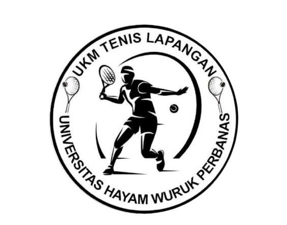

Latihan rutin
Pemanasan, drill forehand, backhand, dan servis bersama anggota lain.

WANI SIKATUniversitas Hayam Wuruk Perbanas Surabaya
Wadah belajar, berlatih, dan bersenang-senang lewat tenis. Dari pemula sampai mahir, semua boleh ikut.
Daftar sekarang Kenali pengurusUKM Tenis Lapangan adalah unit kegiatan mahasiswa Universitas Hayam Wuruk Perbanas Surabaya. Kami menjadi tempat mahasiswa mengembangkan kemampuan tenis sekaligus membangun kekeluargaan.
Tidak perlu punya pengalaman. Latihan rutin kami dirancang agar pemula bisa mulai dari dasar, sementara anggota yang sudah mahir terus berkembang.
Orang-orang di balik UKM Tenis Lapangan periode [2026/2027].
Pemanasan, drill forehand, backhand, dan servis bersama anggota lain.
Main santai antar anggota atau dengan UKM kampus lain.
Dari cara memegang raket sampai rally pertama.
Kegiatan terbuka untuk memperkenalkan tenis lapangan ke mahasiswa dan masyarakat.
Garis servis berada 6,40 m dari net.
Panjang 23,77 m. Lebar 8,23 m untuk tunggal dan 10,97 m untuk ganda. Tinggi net 91,4 cm di tengah.
Poin: 0 (love), 15, 30, 40, lalu game. Jika 40-40 disebut deuce dan harus unggul dua poin berturut-turut.
Set dimenangkan oleh pemain yang lebih dulu meraih 6 game dengan selisih dua. Jika 6-6, dimainkan tiebreak sampai 7 poin.
Forehand, backhand, servis, volley, dan smash. Kuasai servis dan forehand lebih dulu.
Hormati lawan, panggil skor dengan jelas, jangan melintas di belakang lapangan yang sedang bermain, dan jaga kebersihan.
Raket, bola tenis, sepatu khusus lapangan, pakaian olahraga, dan perlengkapan pelindung seperti topi atau sunblock.
Terbuka untuk mahasiswa aktif UHW Perbanas Surabaya. Hubungi kami, lalu datang ke sesi latihan berikutnya.
WhatsApp Instagram @tenis.perbanassby